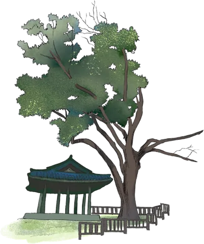
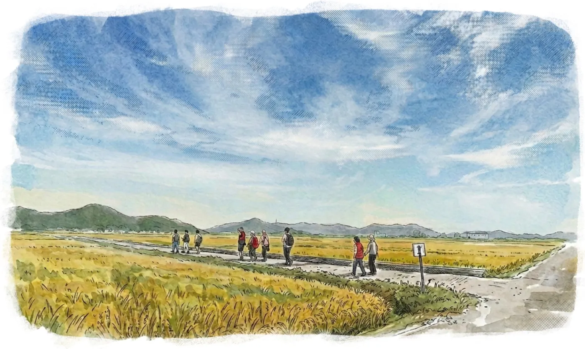
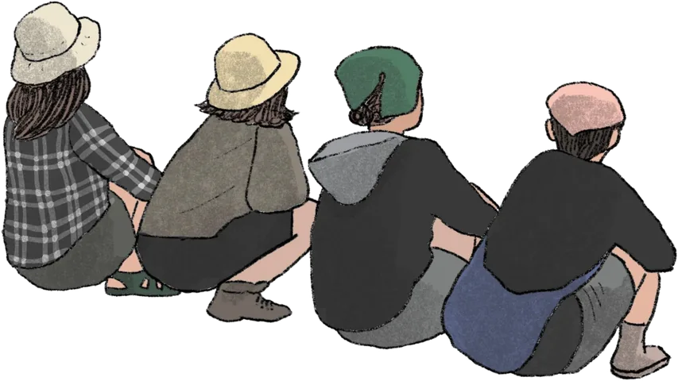
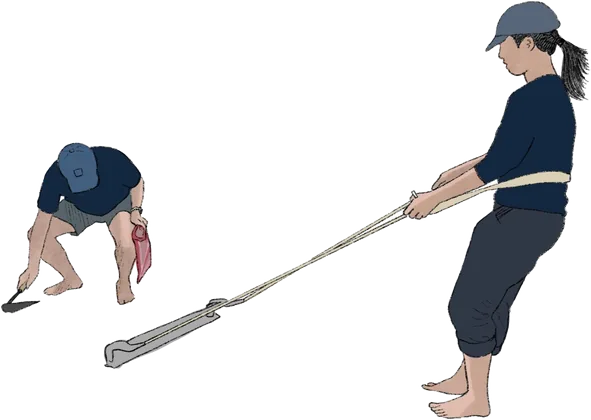
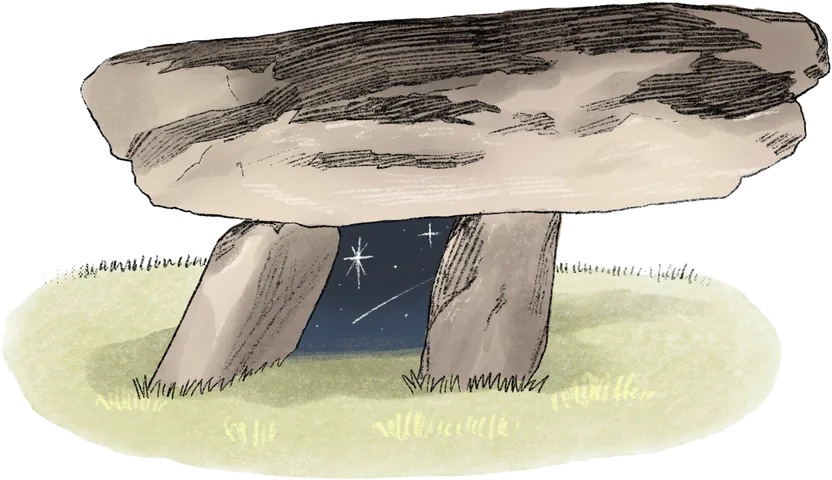
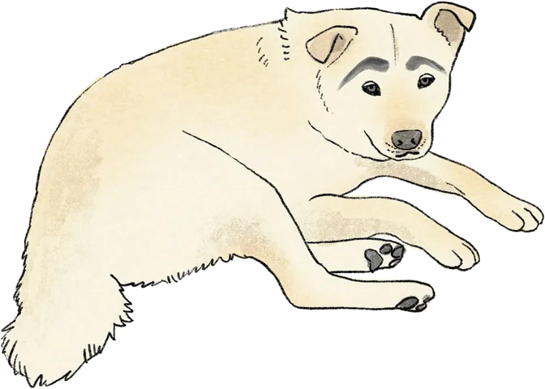

과정
레지던시 기간의 워크숍과 작업 과정을 사진과 짧은 글로 나눕니다.
10월 25일부터 업데이트
2026 · 10.25 — 11.08 · 오픈 프로그램 11.06 — 11.08

의 섬은 사라지는 것들에 대한 질문에서 시작합니다. 예술가와 기획자, 시민이 함께 ‘소멸’을 응시하고, 그 자리에 시적인 공간을 만들어내는 프로젝트입니다.

2025년, 한국·싱가포르·이탈리아의 예술가와 기획자가 강화도에 모여 길을 걷고, 역사적·문화적 장소를 찾고, 사람들을 만났습니다. 각자의 방식으로 ‘여기서 무엇이 사라지고 있는가’를 감각한 리서치의 해였습니다.
2026년, 일본과 말레이시아의 예술가가 합류해 다시 강화에 모입니다. 작년에 발견한 질문을 안고, 사라짐의 자리에 시적 장소를 만들고 그 상상의 공간이 섬 위에 천천히 쌓여가기를 바랍니다.
두 개의 육각형은 이 프로젝트의 상징입니다. 서로 맞물리며 새로운 공간을 만드는 육각형처럼, 각자의 ‘나의 섬’이 이어져 ‘우리의 섬’이 됩니다.
올해 프로젝트는 10월 25일부터 11월 8일까지 강화에서 진행됩니다. 11월 6일–8일에는 관객이 참여할 수 있습니다. 자세한 내용은 이 페이지에 계속 업데이트됩니다.
2025 · 리서치 2025 리서치 아카이브 작년 강화에서 걷고 만나며 발견한 질문들의 기록 hexagon-island.com → 소멸에 관한 당신의 이야기를 남겨주세요 당신 곁에서 사라지고 있는 것은 무엇인가요? 이야기는 ⬡⬡의 섬의 일부가 됩니다. 이야기 남기기 →
한국, 이탈리아, 싱가포르, 말레이시아, 일본의 예술가들이 강화에 머물며 작업합니다.
강윤민지 · 권근영 · 민재원 · 전윤환 · 조냇물 · 변준섭
앤드씨어터는 강화도를 기반으로 활동하는 예술 단체입니다. 2018년 강화로 이주한 뒤 동료 예술가들과 ‘없는극장’과 ‘없는극장 레지던시’를 만들며 지역과 예술의 새로운 관계를 모색해 왔습니다. 교동도 실향민 할머니들의 기억을 따라 걷는 이동형 공연 〈강화도산책: 평화도큐먼트〉(2023), 초대 예술가들이 섬에 머물며 작업하는 〈잠시섬 연극제〉(2021–)를 만들었습니다. 사라져 가는 것들 속에서도 여전히 살아 있는 감각과 보이지 않는 연결을 믿으며, 강화에서 예술의 새로운 형태를 실험하고 있습니다.
연리목은 인디 록밴드 ‘눈뜨고코베인’으로 음악을 시작해 20여 년간 여러 앨범을 발표한 음악가입니다. 강화도에서 10년째 두 아이를 키우며 예술과 일상이 분리되지 않는 삶을 살고 있습니다. 국악기와 밴드를 결합한 ‘타니모션’, 무용·연극·영화 음악 작곡을 거쳐 2023년부터 자기 이름으로 솔로 작업을 시작했고, 전화기를 통해 관객의 기억과 음악이 교차하는 사운드 설치 「회상의 회상」을 선보였습니다. 가족과 함께 거리 음악극단 ‘음악당 달다’도 운영합니다. 그에게 음악은 사라짐 속에 머무는 시간의 예술입니다.
최영두는 기타를 연주하고 음악을 만드는 사람입니다. 밴드 ‘눈뜨고코베인’에서 기타를 연주하고, 프로젝트 팀 ‘209km’에서 음악을 만듭니다. 자기 이름으로는 일상에서 경험하고 느낀 것을 음악의 언어로 옮기는 [Project], [기록] 시리즈를 이어 가고 있습니다. 발전 가능성 있는 아이디어를 발굴하고, 흔들리지 않는 주제를 고르고, 다양성을 받아들여 어떤 형태로든 변할 수 있는 유연한 방법을 고민하며 음악에서 연극과 영상으로 창작의 범위를 넓혀 가고 있습니다.
안나 게수알디 · 지오바니 트로노
2006년 나폴리에서 게수알디|트로노가 세운 다학제 공연예술 단체로, 2007년부터 드라마투르그 로레타 메시티가 함께하고 있습니다. 과정의 공유를 중시하며 교도소, 이민자, 노인, 장애인 등 취약한 환경에 놓인 사람들과 작업해 왔습니다. 시민이 15일 동안 자기 집을 예술가에게 내어 주는 공동체 축제 〈알토페스타〉, 인구 소멸 위기에 놓인 산간 마을들을 공연과 라디오로 다시 잇는 〈일리냐 다리야(공중선 거리)〉를 통해, 예술을 타인과 공간을 다시 연결하는 사회적 행위로 실천합니다.
김나래 · 이건희
시각예술가 김나래와 이건희가 이끄는 커뮤니티 아트 기반의 예술 단체로, 서울에서 강화로 이주한 뒤 기획·교육·공간 운영을 이어 오고 있습니다. 2020년부터 이주 여성, 사회복지사, 강화의 돈대처럼 보이지 않던 존재와 장소에 주목해 왔습니다. 2023년부터는 부속섬 아차도에서 노년 여성 주민들과 산책하고, 함께 농사짓고, 거둔 작물로 음식을 나누며 예술을 ‘생활의 리듬’으로 실천합니다. 핵심어는 ‘돌봄’. 돈대의 돌이 허물어진 자리에 나무와 텃밭이 자라는 풍경처럼, 사라짐 속에서 피어나는 생명의 가능성을 탐구합니다.
예술을 통한 사회 변화를 지향하는 싱가포르의 사회참여형 예술 단체입니다. 창립자 헝러운은 30년간 예술감독을 맡은 뒤 그 자리를 동료들에게 넘겼고, 지금은 큐레이터, 드라마투르그, 예술감독으로 활동합니다. 단체는 20여 년간 ‘땅, 공간, 장소’를 주제로 도서관, 주택가, 거리 등 극장 밖에서 다언어 공연을 만들어 왔습니다. 장기 프로젝트 〈프로젝트 12〉는 본섬에서 배로 12분 거리, 인구가 3,000명에서 28명으로 줄어든 섬 플라우 우빈에서 주민들과 함께 생태와 자본, 시간의 문제를 탐구합니다.
‘몸의 관점에서 세계를 바라보는 메이커’이자 커뮤니티 아트 진행자로, 예술을 통해 사람과 공간, 공동체를 잇습니다. 주로 취약 계층 가정의 아이들, 그가 ‘숨겨진 아이들’이라 부르는 이들과 작업하며, 보이지 않음을 소멸의 전조로 보고 그 존재를 드러내는 일을 해 왔습니다. 싱가포르의 한 동네에서 2년 반 동안 매주 같은 시간, 같은 자리에서 ‘커뮤니티 퍼포먼스 나이트’를 열며 장소와 실천, 사람에 깊이 스며드는 방식을 다졌습니다. 그에게 예술은 “가장 중요하면서도 동시에 가장 중요하지 않은 것”입니다.
리우 후이민 · 리우 즈이 · 츄 순헹
2013년 리우 즈이와 츄 순헹(보이즈 츄)이 함께 세운 말레이시아의 공연 그룹입니다. 민속 공연 ‘24절기 북’에서 출발해, 드러머-퍼포머가 이야기꾼과 음악가, 신체 배우 사이를 넘나드는 ‘드럼 시어터’를 탐구하며 소리와 몸의 상호작용을 핵심 언어로 삼습니다. 프랑스, 헝가리, 호주, 폴란드, 대만, 한국 등의 축제에서 공연했고, 보르도와 베네치아에서 공연예술을 공부한 리우 후이민이 함께합니다. 지금은 과수원 속 공간에서 농사와 공연예술을 결합하는 〈샨-카-라〉 프로젝트에 힘을 쏟고 있습니다.
나카타니 가즈요 · 후지와라 미호 · 나가사와 모에
2013년 교토에서 활동을 시작한 공연예술 그룹입니다. 대표이자 연출가·극작가인 나카타니 가즈요는 음악, 회화, 건축 분야의 예술가들과 협업하며, 공간과 몸을 느리게 바뀌는 계절처럼 다루어 장소의 서사와 관객의 시간·기억을 교차시킵니다. 최근에는 공연자가 ‘비범한 존재’로 일상의 장면에 스며드는 〈풍경 연극〉을 농촌 풍경, 미술관, 폐공장 같은 극장 밖 공간에서 선보이고 있습니다. 프로덕션 매니저 나가사와 모에는 도시샤대학교 대학원에서 지역 사회 속 극장의 역할과 사회복지와의 협업을 연구합니다.
박지선 · 송미선
2014년 결성된 공연예술 프로듀서 콜렉티브로, ‘창의성, 독립성, 수평성’을 핵심 가치로 삼습니다. 국내 창작, 국제공동제작, 국제 투어뿐 아니라 주제 중심의 리서치, 레지던시, 네트워크 구축 등 과정 중심의 활동을 이어 왔습니다. 서울 구도심에서 사라져 가는 것들을 바라본 〈커넥티드 시티〉(2017–2021), 〈DMZ 리서치〉, 화천 예술텃밭과 함께하는 ‘예술가 레지던시–기후변화’(2020–)를 거쳐, 강화 프로젝트에서 경계와 마찰, 연결, 기후위기, 그리고 사라지는 것들에 대한 탐구를 이어 가고 있습니다.

10월 25일부터 강화에서 이어지는 작업을 이곳에 차례로 기록합니다.
레지던시 기간의 워크숍과 작업 과정을 사진과 짧은 글로 나눕니다.
10월 25일부터 업데이트
11월 6일–8일, 관객과 함께하는 발표 프로그램을 안내합니다.
추후 공개

육각형은 올해 작업이 열리는 다섯 곳, 희와래·공간 그리고·없는극장·국자와 주걱·오두돈대입니다. 장소 이름을 누르면 구글 지도가 열립니다.
면 경계와 해안선은 통계청 행정경계(2013) 기준이며, 일부 장소 위치는 주소를 바탕으로 한 근사치입니다.

2026년 10월 25일 – 11월 8일
관객 참여 11월 6일 – 8일